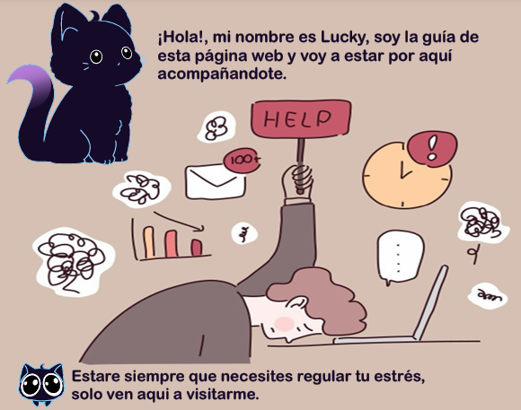
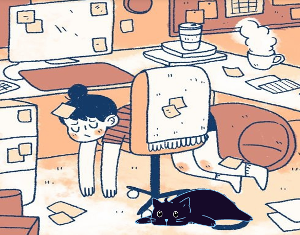
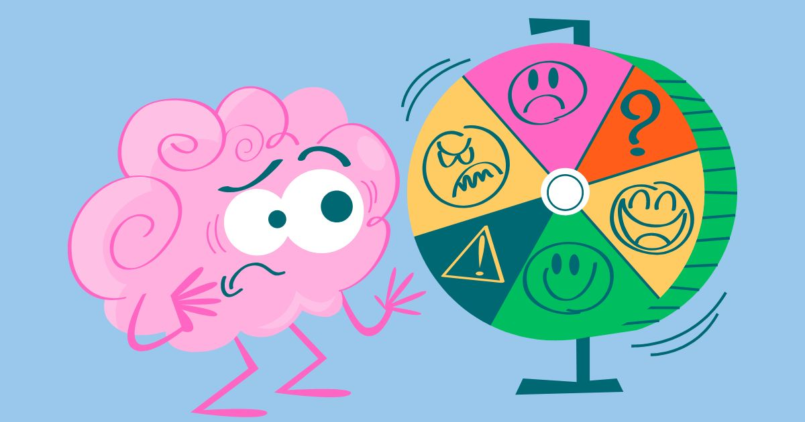
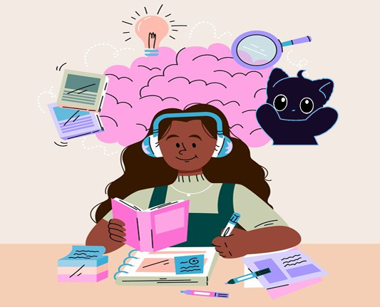
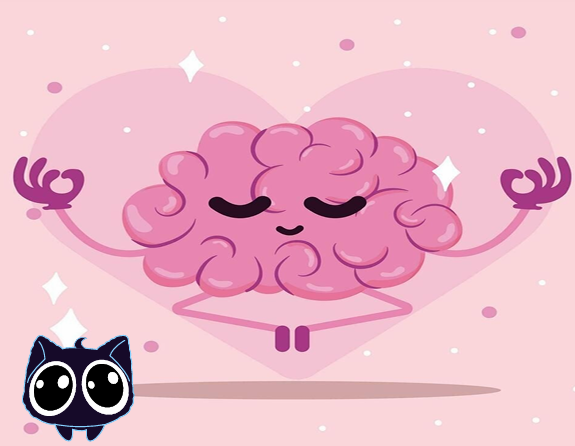
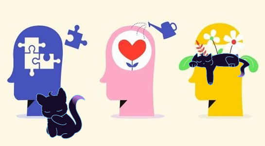
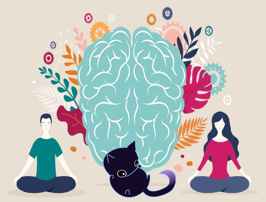
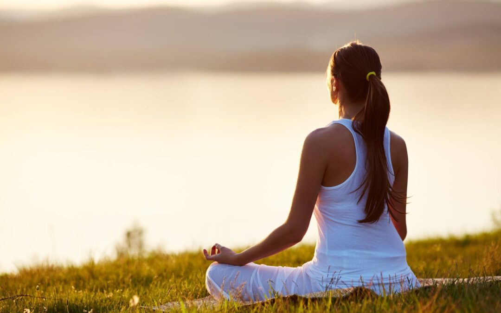

¿El estrés estudiantil te afecta? ¿Cómo el minfulness puede ayudarte?

Índice de Contenidos
La salud mental es un estado de bienestar en el cual el individuo puede ser consciente de sus propias capacidades, puede afrontar las tensiones normales de la vida, trabajar de forma productiva y fructífera y es capaz de hacer una contribución a su comunidad. Esto en el contexto adolescente es un concepto que abraca el bienestar emocional, psicológico y social además de un buen comienzo del descubrimiento de la identidad personal y de la adaptación a un nuevo estilos de vida, aun así estos se pueden ver afectados por los diversos cambios que surgen en esta etapa como lo que puede ser el estrés que surge por actividades escolares
A lo largo del año lidiamos con tareas y responsabilidades que nos generan mucho "ruidomental". ¿Has observado cómo te hace sentir todo?, ¿eres consciente de lo que esas experiencias te han generado?

El estrés es una reacción fisiológica del ser humano ante situaciones que lo agobian, es una reacción natural del cerebro y totalmente necesaria para la supervivencia, esta reacción se activacuando se perciben situaciones demandantes o amenazantes en el entorno donde se encuentra el individuo, sin embargo si esta respuesta se vuelve demasiado intensa y prolongada, puede tener consecuencias negativas en la salud mental y física.
Las causas del estrés y sus resultados son diversos, cada persona tiene una forma distinta de procesarlo y de manejarlo pero no todas tienen la capacidad de realizar ese manejo de forma saludable.
El estrés estudiantil es aquel que se desarrolla cuando un estudiante percibe las demandas y exigencias de su entorno como agobiantes o amenazantes para él, porque sobrepasan sus recursos o su preparación.
Cuando un adolescente se siente demasiado agotado o nervioso en su entorno estudiantil, puede ser grave para la forma que interactúa con su ambiente y se desarrolla en él.
Aunque el estrés puede llegar a ser provechoso porque ayuda al individuo a activarse y crear un impulso que lo ayude a realizar sus actividades (A lo que se le llama eutrés), si este se prolonga por mucho tiempo puede ser peligroso para su salud ya que estaría provocando reacciones en cadena en su organismo que hagan que el estrés se vuelva una desventaja en su salud tanto física como mental (A lo que se le conoce como distrés).
¿Quieres ecuchar música para relajarte o encontrar recursos para estudiar mejor? Ver más →Relajación
Música y materiales diseñados para reducir el estrés.
Se ha comprobado que los niveles de estrés en adolescentes puede superar el promedio del que vive un adulto, también mucho de los adolescentes con escalas altas de estrés aseguraron estar deprimidos o ansiosos, lo cual los lleva a un estilo de vida lleno de dificultades de salud tanto mental como física, ya que el estrés como cualquier padecimiento tiene efectos tanto en la mente como en el cuerpo.
En la realidad estudiantil las deficiencias en el cuidado de la salud mental que puede sufrir un adolescente son perjudiciales en la forma en la que se desarrolla en el entorno, puede afectarles tanto académicamente como mental y físicamente por ejemplo les puede provocar ansiedad, dificultad para concentrarse, estudiar, en el desempeño a la hora de trabajar en su aula de clases sacar buenas notas y aprender.
A demás de que en el aspecto de la salud física pueden sufrir complicaciones corporales como dolores de cabeza y musculares, irritabilidad, dificultad para comer o dormir y problemas para realizar actividades físicas.

¿Qué sucede en nuestro cerebro cundo hay estrés?
El impacto del estrés en nuestro cerebro funciona como una cadena de eventos. Para entenderlo mejor, podemos dividir este proceso en etapas, desde la reacción inmediata hasta los efectos a largo plazo:
- El modo de supervivencia inmediata: Cuando nos sentimos estresados, nuestro cerebro activa un sistema de alarma liderado por el hipotálamo y el locus coeruleus. Esto nos pone en modo supervivencia:
- Alerta máxima: El cuerpo se prepara para luchar o huir
- Reacción física: El corazón late más rápido, los músculos se tensan y aumenta la concentración para enfrentar la amenaza.
- Energía rápida: Las glándulas situadas sobre los riñones liberan adrenalina y cortisol, que suben el azúcar en la sangre para darnos energía inmediata.
Cambios físicos en la estructura del cerebro:
Con el tiempo, el estrés constante cambia físicamente la forma y el tamaño de partes clave del cerebro:
La Amígdala (Emociones): Esta zona se agranda y se vuelve más sensible. Como resultado, sentimos más miedo, ansiedad y reaccionamos de forma exagerada ante cualquier problema.
El Hipocampo (Memoria): Esta parte se encoge y pierde células. Esto hace que sea mucho más difícil recordar cosas o aprender información nueva
La Corteza Prefrontal (Razonamiento): Su actividad disminuye y pierde tamaño. Es la zona encargada de tomar decisiones inteligentes y mantener el autocontrol, por lo que nos volvemos más impulsivos.
¿Por qué el estrés excesivo es malo?
El problema del estrés crónico (o excesivo): Nuestro cerebro puede adaptarse al estrés pasajero, pero el problema surge cuando el estrés no se detiene. Si el cortisol se mantiene elevado por mucho tiempo:
- Deja de ayudarnos y empieza a dañar nuestras neuronas y el sistema inmune.
- El cerebro entra en un estado de inflamación constante, similar a tener una infección que no se cura.
- Al cerebro le cuesta más adaptarse, aprender cosas nuevas o crear nuevas conexiones neuronales (esto se llama pérdida de neuroplasticidad).
Consecuencias en nuestra vida diaria: Si el estrés se vuelve crónico y no dormimos bien o comemos mal, los daños se agravan, provocando fallos de memoria graves (que en casos extremos aumentan el riesgo de demencia), dificultad para concentrarse, hacer planes o tomar decisiones funcionales, peor circulación sanguínea en el cerebro y mayor riesgo de enfermedades mentales.
¿Quieres saber como estudiar mejor? Ver más →Consejos
Formas prácticas para organizar tu vida estudiantil.
Mientras que un poco de estrés nos ayuda a reaccionar, el estrés constante "reprograma" nuestro cerebro, haciendo que las áreas del miedo crezcan y las áreas del pensamiento y la memoria se debiliten.
¿Cómo afecta la falta de sueño al estrés?
Cuando duermes menos de seis horas, tu cuerpo produce más cortisol (la hormona del estrés). Esto te mantiene en un estado de alerta constante, haciendo que sea mucho más difícil relajarte o manejar la presión de los exámenes. Sin un buen descanso, es normal sentirse más irritable, de mal humor o con ganas de llorar por cualquier cosa. Esto aumenta el riesgo de sufrir ansiedad o sentirse deprimido, ya que perdemos la capacidad de gestionar nuestras emociones
El cuerpo también sufre y avisa a través del agotamiento extremo, dolores de cabeza constantes y una sensación de fatiga que no desaparece, lo que empeora mucho la calidad de vida diaria.
La falta de descanso nubla la mente. Esto provoca fallos de memoria, dificultad para prestar atención en clase y lentitud al aprender cosas nuevas. Al final, el cerebro no tiene la energía necesaria para rendir bien. Muchos estudiantes sacrifican horas de sueño para estudiar más, pero como el cerebro no funciona bien sin dormir, obtienen malas notas. Ese bajo rendimiento genera más estrés, lo que les quita el sueño otra vez, creando una trampa que puede llevar incluso a abandonar los estudios.
No dormir no te da más tiempo para estudiar; en realidad, le quita a tu cerebro las herramientas que necesita para aprender, haciéndote sentir más estresado y menos capaz. Si sientes que el estrés o la falta de sueño están afectando seriamente tu salud, es recomendable consultar con un profesional médico o un orientador escolar.

Causas principales del estrés estudiantil
El estrés estudiantil normalmente tiene causas muy variadas las cuales siempre tienen muchos matices pero podemos nombrar las más comunes y generales. Por ejemplo:
- El exceso de tareas y exámenes ya que la sobrecarga de deberes y pruebas puede formar una sobrecarga demandante.
- La presión académica influenciada por expectativas familiares o sociales y el miedo a fracasar que esto trae al estudiante.
- Problemas de organización y un horario de estudio no establecido y la falta de técnicas de aprendizaje.
- Algunos factores sociales como el rechazo, dificultad para integrarse
- Rutina de sueño poco saludable lo cual empeora la forma es que se desempeña dentro del área de clases
Y como consecuencia pueden ocurrir las afecciones ya mencionadas resumiéndolas en síntomas emocionales (ansiedad, irritabilidad, apatía, frustración) síntomas físicos (dolores de cabeza, problemas digestivos, tensión muscular) síntomas cognitivos (dificultad de concentración, memoria bloqueada, bajo rendimiento académico) síntomas conductuales (alejamiento escolar, procrastinación, desmotivación).
Es necesario entender que el estrés, no es solo el “sentirse mal” sino algo más complejo que afecta diversas áreas importantes del organismo

Métodos para manejar el estrés estudiantil
Existen varias maneras de disminuir el estrés estudiantil que si se practican y se aplican a la rutina diaria pueden ser de gran de utilidad. Entre ellas están:
- Tener un plan de organización y técnicas de aprendizaje:
Usa agendas escolares, aplicaciones de productividad, planifica tu tiempo creando un calendario de tareas a realizar y tiempo de descanso, empieza a investigar distintos métodos de estudio (mapas mentales, resúmenes, videos etc)
- Crea hábitos saludables:
Trata de dormir al menos 8 horas, mantén tu alimentación estable (no pierdas ninguna comida y crea un horario para cada una de ellas), practica actividades físicas que mantengan a tu cuerpo y a tu mente liberarse.
- Busca apoyo familiar y escolar:
Trata de mantener una comunicación abierta con tus padres o personas de confianza, para comunicarle tu situación o si estás pasando por alguna indisposición.
- Mindfulness y relajación:
Crea una rutina de ejercicios y practícalos a diario para reducir el malestar del estrés y aclarar tu mente permitiendo afrontar la situaciones de forma más amena.
¿Alguna vez has escuchado la palabra Minfulness? Pues este mismo puede ayudarte a reducir y controlar el estrés estudiantil creando pausas activas para que puedas relajarte y que tu alrededor se vuelva más apacible
Técnicas sencillas para calmar tu mente en minutos: Ver más →Mindfulness
Ejercicios de atención plena

¿Qué es el Minfulness?
Es un proceso de meditación en donde el individuo se enfoca en el presente, sin preocuparse por el futuro, angustiarse por el pasado y sin juzgarse a sí mismo. Este se centra en prestar suma atención a las experiencias del presente, ya sean sensaciones corporales, pensamientos, emociones o el entorno, sin dejarse llevar por juicios o interpretaciones.
Concentrarse en lo que sucede en nosotros y en nuestro alrededor y saber renunciar al ruido y a las distracciones.
Este se considera un método de meditación muy efectivo que permite deshacerse del ruido mental y las molestias causadas por el estrés a través de una pausa activa en donde se puede vaciar de todo tipo de pensamientos y concentrarse en los que se hace durante la pausa activa sin juzgar nada. Prácticas como esta permiten desarrollar la capacidad de estar plenamente concentrados en el presente y comprometido con lo que está viviendo, libre de distracciones o juicios sobre sí mismo o su entorno
Beneficios:
Diversas investigaciones científicas posteriores están comprobando que incluirlo en nuestra rutina diaria conseguimos muchos beneficios para nuestra salud física y mental
- Ayuda a reducir el estrés y la ansiedad, gracias a que enseña a las personas a reconocer sus pensamientos y aceptarlos sin enredarse en ellos.
- Mejorar la concentración, memoria e incluso a reponer el sueño.
- Ayuda a crear una regulación y manejo emocional adecuado y saludable para su vida diaria.
- Descartar los pensamientos intrusivos.
Diversos estudios científicos han demostrado que practicar media hora al día ayuda notablemente a reducir el malestar causado por la ansiedad o la depresión. Además, la meditación potencia la memoria, mejora la concentración y ayuda a desarrollar una mayor inteligencia emocional. También fortalece nuestras defensas naturales y es muy útil para que las personas mayores se sientan menos solas.
Practicar mindfulness nos permite gestionar los impulsos de repetir conductas que ya no nos benefician. Al cultivar una pausa consciente entre lo que pensamos y lo que hacemos, fortalecemos nuestra capacidad de habitar el presente. Esto reduce nuestras reacciones impulsivas y el hábito de vivir en algo llamado piloto automático, permitiéndonos elegir con libertad y acierto la mejor respuesta ante cada situación, sin sucumbir a las prisas.
Uno de los pioneros del mindfulness en la medicina occidental Kabat-Zinn, menciona que para disfrutar de estos beneficios hay que seguir siete principios fundamentales, como por ejemplo:
- Vivir las experiencias sin definirlas como buenas o malas simplemente observarlas sin juzgarlas.
- Aceptar que las cosas suceden a su propio ritmo, es decir, tener paciencia.
- Acercarse a cada experiencia como si fuera la primera vez.
- Desarrollar una confianza básica en la propia intuición y en la capacidad de ser consciente de la propia experiencia.
- Dejar de lado la necesidad de alcanzar un resultado específico durante la práctica
- Puede darse el mérito de lo que haya logrado aunque no necesariamente sea lo que al principio pensó que sería el resultado.
- Dejar ir el pasado, no aferrarse a situaciones, pensamientos o emociones pasadas que ya no están.
Es importante destacar que el mindfulness busca mejorar el bienestar de las personas de forma tangible y no está ligado a ninguna religión ni doctrina filosófica específica. Se trata de una herramienta práctica con beneficios demostrables para la calidad de vida, independientemente de las creencias personales de quien lo practique.

¿En qué consiste la práctica?
La meditación se define como una actividad mental diseñada para alcanzar un estado de atención plena. Este enfoque puede dirigirse hacia:
- Sentimientos específicos: Como la armonía o la paz.
- Percepciones físicas: El ritmo de la respiración o el calor del cuerpo.
- Un objeto o pensamiento concreto.
El propósito fundamental es anclarse en el aquí y ahora para limpiar la mente de ruidos o pensamientos dañinos. Lograr que la conciencia se relaje, observando nuestras emociones y pensamientos sin juzgarlos. A través de la gestión de la atención, aprendemos a:
- Reconocer lo que sucede en nuestro interior en cada instante.
- Desvincular nuestra identidad de nuestros pensamientos.
- Cuestionar patrones mentales antiguos.
En definitiva, el mindfulness nos otorga el poder de vivir con una atención total al momento presente, reconociendo nuestros procesos mentales sin dejarnos dominar por ellos.

¿Cuándo practicarlo?
Para practicar el mindfulness con éxito, lo ideal es dedicarle unos treinta minutos diarios. Sin embargo, lo mejor es empezar con sesiones breves de apenas diez minutos para que la mente se acostumbre poco a poco a estas nuevas sensaciones. Si intentamos meditar demasiado tiempo desde el primer día, es probable que aparezca la frustración o el cansancio al sentir que no dominamos la técnica, lo que podría llevarnos a abandonar el hábito antes de tiempo.
¿Dónde realizar Mindfulness?
El lugar elegido para meditar debe ser un espacio tranquilo, sin ruidos molestos y con una temperatura agradable que nos haga sentir a gusto. Es fundamental apagar el móvil, las alarmas y cualquier aparato electrónico que pueda interrumpir nuestra concentración. Si decides acompañar la sesión con música, asegúrate de que sea relajante y con ritmos que se repitan para que no distraiga tu atención de lo importante.
Hay quienes prefieren meditar al aire libre, ya sea en un jardín o en un parque, lo cual es una excelente idea siempre que se trate de un lugar poco concurrido y sin distracciones. Para facilitar la relajación, se recomienda usar ropa cómoda que no apriete, además de quitarse los zapatos y cualquier accesorio que pueda resultar molesto durante el ejercicio.
Mindfulness formal e informal
El mindfulness se puede practicar de dos maneras distintas que se complementan entre sí. La primera es la práctica formal, que consiste en dedicarnos un tiempo exclusivo para estar en calma, ya sea sentados o acostados. Calmamos nuestro cuerpo y nuestra mente a través de la respiración mientras observamos todo lo que ocurre en nuestro interior sin juzgarlo. Durante este ejercicio, aprendemos a reconocer nuestros pensamientos y emociones como sucesos pasajeros.
La segunda forma es la práctica informal, la cual llevamos a cabo en nuestro día a día al realizar nuestras actividades cotidianas con total atención. Esto significa estar realmente presentes en lo que hacemos: comer cuando comemos, caminar cuando caminamos o saludar cuando saludamos. Se trata de poner toda nuestra conciencia en el momento actual en lugar de dejar que nuestra mente se llene de preocupaciones, constantes críticas hacia nosotros mismos o ansiedad por el futuro. Al final, se trata simplemente de estar donde estamos y vivir el presente con plenitud.
¿Cómo realizar Mindfulness?
Lo ideal es comenzar con unos pocos minutos cada día. La meta es ir aumentando la duración poco a poco hasta llegar a los 30 minutos diarios, pero sin prisas. Es muy importante ser constante y tener paciencia; no te desanimes si no notas resultados de inmediato, ya que los beneficios aparecen con la práctica regular.
- Busca un momento del día en el que estés tranquilo, como al despertar, después de comer o antes de irte a dormir. Elige un lugar relajado donde no haya ruidos ni distracciones, ya sea en tu habitación, en la sala o al aire libre. Lo fundamental es que te sientas cómodo y en un ambiente fresco.
- Para empezar, usa ropa que no te apriete y busca una postura agradable. Puedes sentarte en el suelo con la espalda derecha para respirar mejor o, si lo prefieres, puedes hacerlo acostado.
- Una vez instalado, enfócate en tu respiración. Siente cómo entra el aire por la nariz, cómo llega a tus pulmones y cómo sale de nuevo. Si te distraes con algún pensamiento, no te preocupes: simplemente vuelve a concentrarte suavemente en tu respiración. Verás que con el tiempo te será cada vez más fácil lograrlo.
- Deja que tus pensamientos y emociones fluyan con libertad. No intentes controlarlos ni decidas si son buenos o malos; solo obsérvalos como si fueras un espectador, sin juzgarlos.
Esto es complicado de alcanzar, pero es cuestión de practica y hacerlo una rutina y con el tiempo se volverá algo fácil de lograr
En resumen, el mindfulness nos enseña a manejar nuestra atención para recuperar el control de nuestra vida. Al aprender a enfocar nuestra mente, logramos liberarnos de esos bloqueos o situaciones difíciles que a veces nos impiden avanzar con claridad.